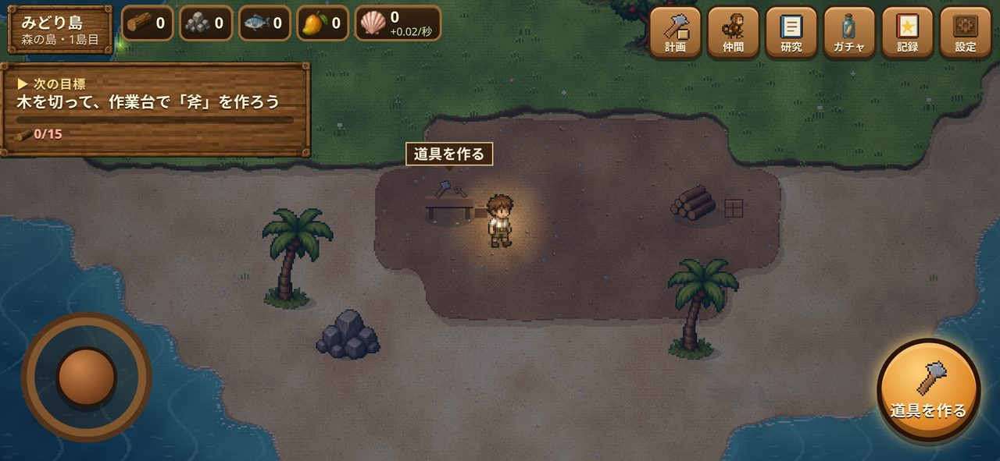
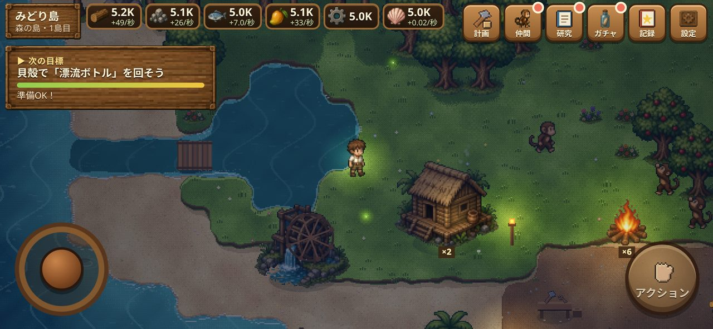
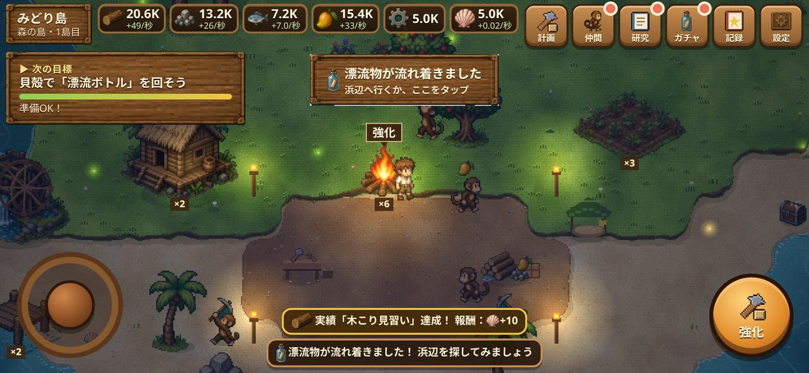

v3 森の島・1本目を中心に
はじめに
この攻略本は、ゲーム本体のソースに書かれている数値と効果だけをまとめたものです。数字の推測や未確認の「おすすめ倍率」は入れていません。
遊ぶ場所は 無人島スローライフ（公開URL：https://saku0802.github.io/island-slowlife/）です。自分で遊ぶ用で、販売やSNSへの告知は想定していません。
画面左上の「次の目標」に従うと、序盤から終盤まで一通り進めます。このページは、その補足と一覧です。
時間の目安は、歩行やメニュー操作を省略したボットシミュレーション（tools/sim.js）です。1秒に1回または2回、資源を集めて買えるものをすぐ買う、という前提です。実際のプレイは歩く時間や操作の分だけ長くなります。ガチャ用の貝殻はシムが余分に足しているので、その目標だけは実時間とズレやすいです。
操作

スマホ
- 左下の仮想スティックで歩く。
- 地図をタップした場所へ歩く。木や岩をタップすると、近づいて作業します。
- 右下の大きなボタンでアクション。長押しで連続します。
- 研究「革の長靴」のあと、アクションボタンの左に「ダッシュ」が出ます（長押しではなくタップ）。
- 画面は横向きを想定しています。右上のボタンから計画・仲間・研究・ガチャ・記録・設定を開きます。
PC
- 移動：WASD または 矢印キー。クリックした場所へ歩くこともできます。
- アクション：E・スペース・Enter（押し続けると連続）。
- ダッシュ（解放後）：Shift。
- パネルを閉じる：Esc。
音（効果音・BGM）は、最初のタップやキー操作のあとから鳴ります。設定でオン／オフと音量（小・中・大）を変えられます。左上の「次の目標」をタップすると、その場所へ歩きます。研究「道しるべ」のあとは、計画の「行く」で離れた建設地点へひとっ飛びできます。
序盤の進め方
浜辺で目が覚めます。最初の仲間はまだいません。手で集めて道具を揃え、猿の寝床を建てて仲良くなるまでが、序盤の本体です。
- 近くの木に近づき「伐採」。木を 15 集めたら、キャンプの作業台で斧（木 15）を作る。
- 斧を作ると、森の木陰に野生の猿が現れます（キャンプの東のほう）。近づくと逃げます。今は追わず、次の道具を作ります。
- 実のなる木で「採取」。作業台で竹かご（木 20・果物 5）を作る。
- 岩で「採掘」。つるはし（木 25・石 10）を作る。
- キャンプの東に猿の寝床（木 150・石 60・果物 30）を建てる。計画の目標をタップすると場所へ案内されます。
- 猿に果物を 3 回あげる（30 → 60 → 100）。あげるたびに 45秒 待ちます。待っているあいだに木・石・果物を集めておきましょう。3回目で仲間になります。
- 仲間の猿に話しかけ、指示を見てみる（「バランスよく」が初期値）。これ以降は「仲間」から猿を増やせます（最初の追加は木 50・果物 20）。
- キャンプに焚き火（木 40・石 15）を起こす。全生産が上がります。
- 作業台で釣り竿（木 30・果物 10）を作り、岸で釣る。
- 2匹目の猿を迎える。貝殻がたまったら「ガチャ」で漂流ボトル。研究はまず「研いだ刃」、続いて「ヤシの草履」が歩きやすくておすすめです。
以降も、左上の「次の目標」の順がそのまま攻略ルートです。畑・採石場・小屋・島の道・水車・工房、と島が広がっていきます。
猿と仲良くなる
最初の猿は、ガチャや購入ではなくクエストです。周回前の1本目では、自動化が始まるまで自分で集める不便さがあります。
| 手順 | 条件・費用 | 内容 |
|---|---|---|
| 1. 斧 | 木 15 | 完成すると、森から猿がこちらを見ます。 |
| 2. 竹かご | 木 20・果物 5 | 果物を集めやすくなります。 |
| 3. つるはし | 木 25・石 10 | 寝床の石を集めるために必要です。 |
| 4. 猿の寝床 | 木 150・石 60・果物 30 | キャンプの東。完成後、最初の果物は約 8 秒待ってからあげられます。 |
| 5. 果物 1回目 | 果物 30 | なかよし 1/3。その後 45 秒待つ。 |
| 6. 果物 2回目 | 果物 60 | なかよし 2/3。その後 45 秒待つ。 |
| 7. 果物 3回目 | 果物 100 | なかよし 3/3 で仲間になる。待ち時間のあとではなく、3回目をあげた時点で加入します。 |
寝床用の果物 30 と贈り物 30＋60＋100 で、クエストだけで果物は 220 使います（竹かごの 5 は別）。待ち時間の合計は、寝床後の約 8 秒＋贈り物のあいだの 45 秒×2 ＝ 約 98 秒です。
シムでは、仲間になるまで 約 2.9 分（2行動/秒）〜 約 3.8 分（1行動/秒）。実時間ボットでは約 3 分 11 秒でした。歩く距離があるので、手で遊ぶとこれより長くなることがあります。
以前のセーブで、すでに猿が仲間だった場合は、クエスト完了扱いになります。2周目以降は最初から猿が 1 匹いて、クエストは不要です。
移動を速くする

基本の歩く速さに、研究と道とダッシュが掛け算されます。
| 要素 | 解放 | 効果 |
|---|---|---|
| ヤシの草履 | 研究（前提：研いだ刃） 木 350・果物 150 | 歩く速さ +20%（×1.2） |
| 島の道 Lv1 | 計画から。つるはしと焚き火のあと 木 400・石 250 | 道の上は歩く速さ ×1.45。レベルが上がると道が遠くまで延びます（速さの倍率は同じ）。 |
| 島の道 Lv2 | 木 6.0K・石 5.0K | 水車・採石場・桟橋・工房方面などへ延長。 |
| 島の道 Lv3 | 木 200K・石 200K・部品 500 | 港・見張り台・橋のほうなどへ延長。 |
| 道しるべ | 研究（前提：ヤシの草履・石工術） 木 5.0K・石 3.0K | 計画の「行く」で、離れた建設地点へファストトラベル（距離が十分あるとき）。 |
| 革の長靴 | 研究（前提：道しるべ・釣り餌の工夫） 魚 20.0K・果物 15.0K | 歩く速さ +25%（×1.25）。ダッシュ解放（スマホはダッシュボタン、PCは Shift）。 |
| ダッシュ | 革の長靴のあと | 約 0.9 秒間、速さ ×1.75。再使用まで約 3 秒。 |
草履と長靴は両方とも効きます（×1.2×1.25＝×1.5）。道の上でダッシュすると、さらに ×1.45×1.75 が掛かります。
おすすめは、研いだ刃 → ヤシの草履を早めに取り、石工術も取って道しるべ、そのあと革の長靴です。島の道 Lv1 は焚き火のあとすぐ敷けます。
研究
おすすめの順
いちばん確実なのは、ゲーム内の「次の目標」と研究パネルで、解放されたものを順に取ることです。移動と生産の優先度を足すと、次の流れになります。
- 研いだ刃（手で採取 ×2）。すべての始まりです。
- ヤシの草履。歩くのが楽になります。
- 資源が足りるものから 製材の技・石工術・釣り餌の工夫・堆肥づくり（それぞれ対応する資源 ×2）。道しるべのために石工術は早めがよいです。
- 猿とバナナ（猿の生産 ×3）。
- 火の番・灌漑・貝殻細工（焚き火強化、畑と桟橋 ×3、貝殻 ×2）。
- 道しるべ → 革の長靴。
- イベント用に 天気読み → 交易術。
- 工房のあと 歯車 → からくり仕掛け（助手の自動雇用）→ ロボット工学 → 大量生産（施設コスト −25%・施設の自動建設）→ 航空力学。
- 進めるルートに合わせて 造船術（脱出船のコスト半減）または 観光学（リゾートのコスト半減）。
- 島の調和（全生産 ×3。橋を架けられる）→ 橋 → 猿の長老／潮の満ち引き、遺跡の調査 → 灯台の設計 → 星図 → 石板を揃えて 古代の叡智。
周回を 4 回以上すると、研究コストが 25% 安くなります。12 回以上の周回では、第1段階（下表の段階 1）の研究が次の島に引き継がれます。
一覧（1本目の基本コスト）
| 段階 | 研究 | 効果 | コスト | 前提 |
|---|---|---|---|---|
| 1 | 研いだ刃 | 手で採取 ×2 | 木 200 | — |
| 1 | ヤシの草履 | 歩く速さ +20% | 木 350・果物 150 | 研いだ刃 |
| 1 | 製材の技 | 木 ×2 | 木 600・石 100 | 研いだ刃 |
| 1 | 石工術 | 石 ×2 | 石 500 | 研いだ刃 |
| 1 | 釣り餌の工夫 | 魚 ×2 | 魚 400 | 研いだ刃 |
| 1 | 堆肥づくり | 果物 ×2 | 果物 400 | 研いだ刃 |
| 2 | 猿とバナナ | 猿の生産 ×3 | 果物 3.0K・木 2.0K | 堆肥づくり |
| 2 | 火の番 | 焚き火の効果 2倍 | 木 4.0K・石 2.5K | 石工術・製材の技 |
| 2 | 灌漑 | 畑と桟橋 ×3 | 果物 6.0K・魚 6.0K | 釣り餌の工夫・堆肥づくり |
| 2 | 貝殻細工 | 貝殻の獲得 ×2 | 魚 10.0K | 釣り餌の工夫 |
| 2 | 道しるべ | 計画の「行く」でファストトラベル | 木 5.0K・石 3.0K | ヤシの草履・石工術 |
| 3 | 革の長靴 | 歩く速さ +25%・ダッシュ解放 | 魚 20.0K・果物 15.0K | 道しるべ・釣り餌の工夫 |
| 3 | 歯車 | 工房 ×2・変換コスト半減 | 木 40.0K・石 40.0K | 火の番 |
| 3 | からくり仕掛け | 助手の自動雇用を解放 | 木 100K・部品 200 | 歯車・猿とバナナ |
| 3 | 天気読み | 嵐の悪影響が半分・イベント間隔 −30% | 魚 30.0K・果物 20.0K | 貝殻細工 |
| 3 | 交易術 | 商人船の取引が2倍お得 | 果物 50.0K・魚 50.0K | 天気読み |
| 4 | ロボット工学 | ロボット ×3 | 部品 2.0K・石 300K | からくり仕掛け |
| 4 | 大量生産 | 施設・助手のコスト −25%・施設の自動建設を解放 | 部品 8.0K・木 1.0M | ロボット工学 |
| 4 | 航空力学 | ドローン ×3 | 部品 15.0K・魚 2.0M | ロボット工学 |
| 4 | 造船術 | 脱出船のコスト半減 | 木 1.0M・部品 5.0K | 歯車 |
| 4 | 観光学 | リゾートのコスト半減 | 果物 1.0M・魚 1.0M | 交易術・灌漑 |
| 5 | 島の調和 | 全生産 ×3・東の小島へ橋を架けられる | 木・石・魚・果物 各 5.0B・部品 2.0M | 航空力学・大量生産 |
| 6 | 猿の長老 | 猿 ×5・新しい指示「森の手入れ」 | 木 40.0B・果物 40.0B | 島の調和 |
| 6 | 潮の満ち引き | 魚・果物 ×3・ドローンが沖で大物を探す | 魚 80.0B・果物 80.0B | 島の調和 |
| 6 | 遺跡の調査 | 小島の岩から「石板の欠片」が出る | 石 150B・部品 20.0M | 島の調和 ＋ 橋を架ける |
| 6 | 灯台の設計 | 小島に「灯台」を建てられる | 石 400B・木 400B | 遺跡の調査 |
| 7 | 星図 | 全生産 ×2・脱出船とリゾートのコスト半減 | 木・石・魚・果物 各 3.0T | 潮の満ち引き・猿の長老・灯台の設計 |
| 7 | 古代の叡智 | 全生産 ×10・貝殻 ×2（最終研究） | 木・石・魚・果物 各 80.0T・部品 30.0B | 島の調和・造船術・観光学・星図 ＋ 石板の欠片 3つを石碑で解読 |
研究は全部で 28 です。実績「古代の叡智」は、この 28 をすべて完了すると達成します。
施設・道具・港

道具（作業台）
4種。最大 Lv30。作ったあと強化すると、その資源の「手で集める量」が +1 され、生産は ×1.25 されます。
- 斧（伐採・木）：木 15
- 竹かご（採取・果物）：木 20・果物 5
- つるはし（採掘・石）：木 25・石 10
- 釣り竿（釣り・魚）：木 30・果物 10
強化の基本コストは、今のレベルを Lv とすると「初回コスト × 8 × 6（Lv−1）」です（例：斧の 1 回目の強化は木 120）。Lv7 以上のときの強化には部品も必要で、部品は 10 × 5（Lv−7） です。
施設（1軒目のコスト）
同じ施設を増やすたびに費用が上がります（下表の「倍率」）。25軒ごと、同じ種類の施設の生産が 2 倍になります。地図上の建設地点で最初の1軒を建てます。「大量生産」の研究、または周回 5 回以降は、建てたことのある施設の自動増設が使えます。
| 施設 | 1軒目 | 倍率 | 解放 | 効果（ソース表記） |
|---|---|---|---|---|
| 焚き火 | 木 40・石 15 | 1.45 | つるはし | 全生産 +10%/基（「火の番」で +20%） |
| 畑 | 木 100・果物 50 | 1.18 | 竹かご | 果物 +2（基礎値。「灌漑」で畑は ×3） |
| 桟橋 | 木 150・石 60 | 1.18 | 釣り竿 | 魚 +2（「灌漑」で ×3） |
| 採石場 | 木 120・石 30 | 1.18 | つるはし | 石 +2 |
| 小屋 | 木 400・石 200・果物 100 | 1.4 | 焚き火 | 助手の生産 +25%/軒 |
| 水車 | 木 2.5K・石 1.5K | 1.32 | 小屋 | 木・石 各 +8。施設の生産 +10%/基。完成すると港が開く |
| 工房 | 木 8.0K・石 6.0K・魚 2.0K | 1.2 | 水車 | 部品 0.5/秒（「歯車」で 1.0/秒）。変換は木・石 各 20 で部品 1（「歯車」で各 10）。ロボット・ドローンをここで作る |
| 見張り台 | 石 50.0K・部品 150 | 1.25 | 工房 | 魚 +30。貝殻 +0.03/秒・イベント間隔 −3%/基 |
| 灯台 | 石 600B・部品 100M（1本目） | 1.3 | 研究「灯台の設計」＋橋 | 魚・石 各 +1.0M。貝殻 +0.2/秒・夜の生産 ×1.5。周回すると費用が跳ね上がります |
東の小島への橋
研究「島の調和」のあと（または周回 3 回以上）に架けられます。1本目は木 20.0B・石 10.0B。完成すると東の小島へ渡れ、全生産 ×1.5。小島には採取量 2 倍の木と岩、古代の石碑、新しい釣り場があります。
脱出船と楽園リゾート（1本目・割引なし）
港は水車を建てると開きます。部品は順番に作る必要があります（前の工程が終わってから）。どちらかを 5/5 まで完成させると、次の島へ周回できます。研究「造船術」「観光学」「星図」で費用が半減します。2周目以降は、周回数に応じて費用が大きく上がります（×200周回数）。
| 脱出船 | 楽園リゾート | |
|---|---|---|
| 1 | 竜骨：木 1.0M・石 300K | 浜辺の清掃：木 1.0M・果物 1.0M |
| 2 | 船体：木 1.0B・部品 100K | 水上コテージ：木 3.0B・石 1.0B |
| 3 | ヤシ繊維の帆：果物 100B・魚 30.0B | 海辺のレストラン：魚 100B・果物 300B |
| 4 | 舵と錨：石 500B・部品 100M | 天然温泉：石 800B・部品 300M |
| 5 | 食料と水：魚 40.0T・果物 60.0T | 花火とお祭り広場：木 60.0T・石 6.0T・魚 30.0T・果物 60.0T |
船で出ると「航海の星」（1個で全生産 +25%）、リゾートを開業すると「楽園の花」（1個で全生産 +15%・貝殻 +5%・オフライン上限 +0.5 時間）がもらえます。もらえる個数は、その周回で集めた資源量から決まり、最低 1 です。
助手
地図を歩く仲間です。指示を出すと仕事の割合が変わります。25匹（体）ごとに、その助手の生産が 2 倍になります。レベルアップの上限は Lv50 です。
| 助手 | 最初の雇用 | 倍率 | 基礎生産 | 解放 |
|---|---|---|---|---|
| 猿 | 木 50・果物 20（2匹目から。1匹目はクエスト） | 1.15 | 木 0.5・果物 0.5 | 野生の猿と仲良くなる |
| ロボット | 石 4.0K・部品 25 | 1.15 | 木 20・石 20 | 工房 |
| ドローン | 魚 40.0K・部品 250 | 1.15 | 魚 120・果物 120・部品 0.3 | ロボット 3 体 |
レベルアップ費用（1回目）：猿は果物 300・木 200、ロボットは部品 150、ドローンは部品 1.5K・魚 50.0K。以降は 10 倍ずつ増えます。研究「大量生産」でレベルアップ費用も 25% 安くなります。
研究での強化：猿は「猿とバナナ」で ×3、「猿の長老」でさらに ×5。ロボットは「ロボット工学」で ×3。ドローンは「航空力学」で ×3。
指示
- バランスよく：いつもの仕事を半々で。
- 木／果物／石／魚を優先：その資源の割合 ×1.6、ほか ×0.4（その助手が持つ生産に対して）。
- ついてくる（猿・ロボット）：あなたのそばで手伝う。手で集める量 ×1.5（生産はそのまま）。
- 休む：生産を止めて元気をためる。再開すると、ためた分だけ 2 倍で働く（最大 60 秒）。たまっていく速さは 90 秒で満タンです。
- 森の手入れ（研究「猿の長老」のあと、猿のみ）：切り株をすぐ植え直す。木・果物 ×1.25。
小屋 1 軒ごとに助手の生産 +25%。ガチャの一部の景品でも助手の生産が上がります。自動雇用は研究「からくり仕掛け」、または周回 5 回以降で使えます。
ガチャ（ゲーム内の貝殻のみ）
課金の仕組みはありません。通貨は島で集める貝殻だけです。かぶりは強化素材になり、最大レベル済みの重複は貝殻が戻ります（N 2・R 5・SR 15・SSR 50）。
| 漂流ボトル | 宝箱 | |
|---|---|---|
| 単発 | 貝殻 10 | 貝殻 40 |
| 10連 | 貝殻 90 | 貝殻 360 |
| 天井（必ず SSR） | 60 回目 | 40 回目 |
| 排出率 N / R / SR / SSR | 62% / 28% / 8% / 2% | 35% / 40% / 19% / 6% |
| 種類の出やすさ（同レア内） | 助手 45・装飾 45・遺物 10 | 助手 20・装飾 20・遺物 60 |
| 特徴 | 手軽。助手と装飾が出やすい | 高めだが遺物（恒久バフ）が出やすい |
天井はソフト天井ではなく、その回数までに SSR が出なければその回は必ず SSR で、カウントは SSR が出るとリセットされます。画面の「排出率の詳細」でも同じ説明が出ます。
景品は 30 種（助手・装飾・遺物 各 10）。強化は同じ景品の重複素材が、今の Lv と同じ枚数だけ必要で、最大 Lv10 です。効果はレベルに比例します。
貝殻の入り方（序盤が細かい理由）
- 基礎で 0.02 個/秒（見張り台で +0.03/秒、灯台で +0.2/秒）。研究「貝殻細工」で獲得 ×2。
- 実績の報酬（例：斧で +10、猿の仲間で +10、道具 4 種で +15 など）。
- 漂流物イベント：貝殻 3〜10 × 貝殻倍率（75% で図鑑の漂流物も）。
- 商人船：魚の 30% と交換で貝殻 15（「交易術」で 30）。
基礎収入だけだとボトル 1 回（10 個）に 500 秒（約 8.3 分）かかります。実績と最初のイベントを拾うと、それより早く回せます。それでも、目標「貝殻で漂流ボトルを回そう」の前は少し待ちやすいです。
実績
全部で 46 個。報酬は貝殻か、全生産の加算です（複数の加算は足し算）。代表的なものを挙げます。
| 実績 | 条件 | 報酬 |
|---|---|---|
| はじめの一歩 | 手で 10 回集める | 貝殻 5 |
| 道具の力 | 斧を作る | 貝殻 10 |
| 仲間ができた | 猿を仲間にする | 貝殻 10 |
| 道具そろい踏み | 4種の道具をすべて作る | 貝殻 15 |
| 名工 | いずれかの道具を Lv10 にする | 全生産 +5% |
| 働き者 / 島いちばんの働き者 | 手で 300 回 / 3000 回 | 全生産 +5% / +10% |
| 木こり見習い | 木を累計 1.0K | 貝殻 10 |
| 石の山 / 大漁旗 / 果樹園の主 | 石・魚・果物を累計 1.0M | 各 全生産 +5% |
| 部品職人 | 部品を累計 1.0K | 貝殻 20 |
| 島の豊かさ / 豊かな島 / 楽園の兆し / 伝説の富 | 資源累計 1.0M / 1.0B / 1.0T / 1.0aa | 貝殻 30 / +10% / +20% / +50% |
| 猿の群れ / 猿の王国 | 猿 25 / 100 匹 | +5% / +15% |
| 機械じかけ / 空の目 | ロボット / ドローンを作る | 貝殻 20 / 30 |
| 頼れる相棒 | 助手を Lv5 にする | +5% |
| 開拓者 | 灯台以外のすべての施設を建てる | 貝殻 30 |
| 学びの始まり / 島の学者 / 古代の叡智 | 研究 5 / 12 / すべて | 貝殻 15 / +5% / +25% |
| 運だめし / コレクター / 宝探し名人 | ガチャ 1 / 50 / 300 回 | 貝殻 5 / +5% / +15% |
| 虹色の輝き / 愛着 / 完全なる蒐集 | SSR を得る / 景品を Lv10 / 全 30 種 | 貝殻 30 / +10% / +50% |
| 島の日常 / 海の便り | イベント 5 / 30 回 | 貝殻 15 / +10% |
| 釣り好き / 海の博士 | 魚 10 種 / 魚図鑑完成（27種） | 貝殻 20 / +30% |
| 拾いもの上手 / 漂流物博士 | 漂流物 10 種 / 完成（20種） | 貝殻 20 / +30% |
| 海を渡る橋 / 石板の謎 | 橋を架ける / 欠片 3 つ | 貝殻 40 / 40 |
| いざ大海原へ / 楽園の主 | 船で出る / リゾート開業 | 各 +10% |
| 旅慣れた漂流者 / 島めぐりの達人 / 七つの海 | 周回 5 / 10 / 25 回 | +15% / +30% / +50% |
| 三つの島 / すべての島へ | 島 3 種類 / 5 種類すべて | 貝殻 50 / +25% |
イベント
最初のイベントは、開始から 100 秒後に「漂流物」が来ます。それ以降は 150〜270 秒に、間隔補正を掛けた時間で、漂流物（45%）・嵐（25%）・商人船（30%）のどれかです。「天気読み」で間隔が 30% 短くなり、嵐の悪影響も半分になります。霧の島はイベントが多めです。見張り台と灯台、ガチャの一部効果でも間隔が変わります。
漂流物が流れ着きました
- 中身を確かめる：75% で漂流物（図鑑）。必ず貝殻 3〜10 × 貝殻倍率。
- 流木として集める：木は約 150 秒ぶん（最低 60）、石は約 60 秒ぶん（最低 20）。
序盤の貝殻が欲しいときは「中身を確かめる」がわかりやすいです。
嵐が近づいています
- 小屋で嵐をやり過ごす：60 秒間、全生産 ×0.6（「天気読み」後は ×0.8）。終わりに、各基本資源 約 3 分ぶん（最低 30）と漂流物 1 つ。
- 嵐の海で大物を狙う：45 秒間、魚 ×6、ほかの資源 ×0.5（「天気読み」後は ×0.75）。その場で魚が 1 匹釣れ、珍しい魚が出やすい（図鑑の抽選が偏ります）。
商人船がやってきました
1 つだけ選べます。「交易術」でお得さが 2 倍になります。
- 魚の 30% → 貝殻 15（交易術で 30）。魚が 10 以上必要。
- 果物の 30% → 工房前は同じ量の石 ×1.5（交易術で ×3）。工房後は部品（約 300 秒ぶん、最低 10。交易術で 2 倍）。果物が 10 以上必要。
- 木の 20% → 未発見優先の漂流物。木が 10 以上必要。
- 見送ることもできます。
画面上のお知らせをタップするとイベントが開きます。漂流物は浜辺を探す案内が出ます。
図鑑
記録タブに、魚（27 種）と漂流物（20 種）があります。種類を 1 つ見つけるごとに全生産 +2%。魚図鑑を完成させるとさらに ×1.5、漂流物図鑑を完成させるとさらに ×1.5 です。
魚は釣り・桟橋やドローンの定期釣り（釣り竿があり、15 秒ごとに 35% のチャンス）・嵐イベントで増えます。島ごとの固有種があります（森・火山・サンゴ・霧・星）。漂流物は探索のごく低い確率、漂流イベント、嵐のあと、商人船の「珍しい品」で増えます。
レア度の重み（図鑑の抽選）：N 60・R 26・SR 10・SSR 3。
魚（抜粋：島ごとの固有）
- どこでも：アジ、イワシ、サバ、イソガニ、クルマエビ、カクレクマノミ、ハリセンボン、アオリイカ、マダコ、イセエビ、ネムリブカ など。
- 森の島：ニジマス、オオナマズ、黄金のアユ（SSR）。
- 火山島：キンメダイ、チョウチンアンコウ、溶岩ガニ（SSR）。
- サンゴ島：ナンヨウハギ、チョウチョウウオ、アオウミガメ、オニイトマキエイ（SSR）。
- 霧の島：ミズクラゲ、リュウグウノツカイ、シーラカンス（SSR）。
- 星の島：月光クラゲ、流れ星イカ、ホシゾラウオ（SSR）。
周回と新しい島
脱出船かリゾートを完成させて出航（開業）すると、次の島に移ります。貝殻、ガチャのコレクション、図鑑、実績、周回の勲章（星・花）は残ります。リセットされるのは、資源（貝殻以外）、施設、道と橋、研究（下記の例外あり）、船とリゾートの進捗、道具の強化（4種とも Lv1 の状態で残る）、助手（猿 1 匹だけ残る）です。
島の種類
| 島 | 解放 | 特徴 |
|---|---|---|
| 森の島 | 最初から | 木・果物 ×1.5 |
| 火山島 | 周回 1 回 | 石 ×2・部品 ×1.5／魚 ×0.8 |
| サンゴ島 | 周回 1 回 | 魚 ×2・貝殻 ×1.5／木 ×0.8 |
| 霧の島 | 周回 3 回 | 全資源 ×1.3・イベント多め |
| 星の島 | 周回 6 回 | 全資源 ×1.5・貝殻 ×3。夜が少し残ります |
周回の節目
- 1 回：4種の道具（Lv1）と猿 1 匹を持って新しい島へ（実際の引き継ぎ内容）。
- 2 回：全生産 ×1.5
- 3 回：霧の島／橋の解放条件のひとつ
- 4 回：研究コスト −25%
- 5 回：助手の自動雇用と施設の自動建設が最初から使える
- 6 回：星の島
- 8 回：オフライン上限 +12 時間
- 10 回：全生産 ×3
- 12 回：第1段階の研究を引き継ぐ
- 15 回：貝殻の獲得 ×2
- 20 回：全生産 ×5
- 30 回：全生産 ×10「島の伝説」
船とリゾート、橋、灯台の費用は周回するほど大きくなります。研究の割引と「造船術」「観光学」「星図」で相殺していきます。
オフライン進行

タブを閉じているあいだも、仲間たちは働いたことになります。戻ったときに「おかえりなさい！」と、獲れた資源が表示されます（離れていた時間が 30 秒以上のとき）。
初期の上限は 4 時間です。ガチャの「カメ」（+1 時間）や「星の砂時計」（+2 時間、レベルで増加）、楽園の花（1 個につき +0.5 時間、最大 +24 時間）、周回 8 回（+12 時間）で延びます。合計の上限は 72 時間までです。
1 分以上操作が止まっても、同じようにオフライン計算が入ります。上限を超えた分は入りません。
昼夜は 300 秒（5 分）周期で、そのうち夜がだいたい 1 分前後あります。見た目のほか、灯台があるとき夜の施設生産が ×1.5 になります。
セーブのコツ
以前の版では「セーブしたのに、開き直すと戻っていた」ことがありました。スマホのファイルアプリや、ファイルを直接（file://）開くと、見た目は保存できても、タブを閉じると残らないことがあります。必ずこの攻略本と同じ https のページで遊んでください。
- 自動保存は 5 秒ごとと、タブを隠したとき・閉じる前・（対応ブラウザでは）ページが凍結されるときにも走ります。
- 設定に、手動の「セーブ」「ロード」、セーブコードの書き出し／読み込みがあります。別の端末に移すときや、保存が使えないときの控えに使えます。
- プライベートモードや保存が拒否された環境では、画面にトーストが出ます。そのときはセーブコードをコピーしてください。
- 設定の「ロード」と「セーブコードを読み込む」は、いまの進行を上書きします。読み込む前に、必要ならコードを書き出してください。
- データのリセットは、周回・ガチャ・図鑑・実績も含めて全部消えます。二度確認があります。
- セーブの保存先は、このブラウザの localStorage（キー
islandSlowLife_save_v2）です。v1 のセーブがあれば起動時に移行します。
iPhone の Safari では、この公開 URL で遊んだあと、タブを完全に閉じて開き直し、進行が残るか一度確認してください。この環境では Safari 相当の自動テストができないため、実機確認をお願いしています。
時間の目安（1本目・森の島）
ボットが「買えるものをすぐ買い、手作業も続ける」場合の目安です。歩行やメニュー操作はほぼ入っていません。
| できごと | 2行動/秒 | 1行動/秒 |
|---|---|---|
| 斧・竹かご・つるはし | およそ 0.2 分まで | およそ 0.3 分まで |
| 猿の寝床 | 約 1.2 分 | 約 2.2 分 |
| 猿が仲間になる | 約 2.9 分 | 約 3.8 分 |
| 研いだ刃 | 約 2.9 分 | 約 4.4 分 |
| ヤシの草履 | 約 3.7 分 | 約 5.6 分 |
| 小屋・島の道 | 約 4.5 分 | 約 6.3〜6.5 分 |
| 猿とバナナ | 約 6.0 分 | 約 8.8 分 |
| 道しるべ・革の長靴 | 約 6.1 分 | 約 8.9〜9.0 分 |
| 工房・ロボット | 約 7.4〜7.5 分 | 約 9.8〜10.0 分 |
| 脱出船の竜骨 | 約 8.5 分 | 約 11.1 分 |
| 島の調和 | 約 13.1 分 | 約 15.8 分 |
| 橋 | 約 13.1 分 | 約 15.9 分 |
| 脱出船の完成（5工程すべて） | 約 15.8 分 | 約 18.4 分 |
実プレイでは、歩く・待つ・メニューを開く分だけ遅くなります。とくに貝殻待ちと、「島の調和」前後の大きな費用は、間が空きやすいところです。シムは貝殻を多めに拾い、宝箱ガチャの目標も内部で早めに満たしているため、ガチャ関連の時刻は参考にしませんでした。
2周目以降は、引き継ぎと勲章でかなり速くなります。シムの 2 本目は条件が違うので、1本目の目安とは比べないでください。
そのほか
- 石板の欠片は、研究「遺跡の調査」のあと、小島の岩を掘ると出ます。1回あたり 12%、または 10 回掘ると必ず 1 つ。3 つ集めて石碑で「古代の叡智」を解読します。
- 設定の「目標への矢印」は、次の目標の場所を指す案内のオン／オフです。この攻略本とは別のスイッチです。
- 効果音と BGM は、端末内で合成しています。最初の操作まで無音です。
- 数値は JavaScript の浮動小数のため、およそ 1.8e308 が上限です。